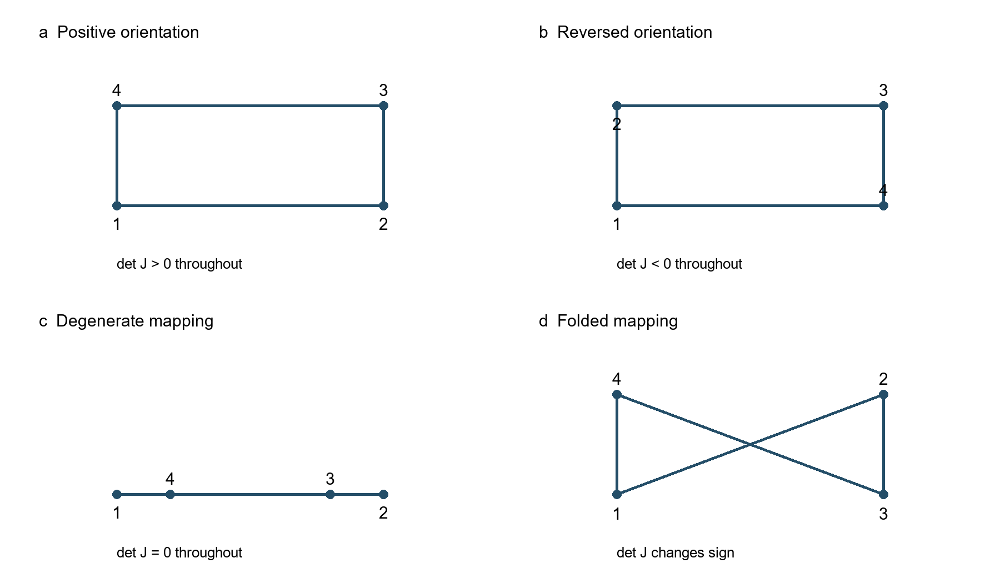
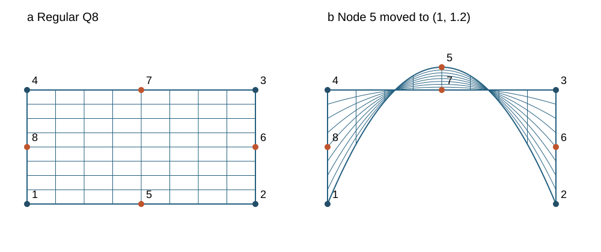

01
Introduction
In isoparametric finite element analysis, the geometry of an element is described by mapping a parent element, defined in natural coordinates, into the physical coordinate system. [1], [2], [3]
The Jacobian matrix of this transformation plays a fundamental role in evaluating spatial derivatives, strains, stresses, and element matrices.
Its determinant is also associated with element orientation and geometric validity. However, the interpretation of its sign requires some care.
A negative Jacobian determinant may result from a reversed local node-numbering convention, whereas a change of sign within an element may indicate a folded or inverted mapping. These situations have different implications and should not be confused.
This section discusses the relationship between local node numbering, element orientation, and the Jacobian determinant for two-dimensional and three-dimensional isoparametric continuum elements, particularly Q4, Q8, HEX8, and HEX20.
Special attention is given to higher-order elements, for which a valid nodal arrangement does not necessarily guarantee a valid mapping throughout the element.
The discussion concerns continuum elements used in stress analysis. Bar and beam elements are not considered here.
02
Local node numbering and element orientation
Consider a two-dimensional isoparametric element with natural coordinates .
The physical coordinates are interpolated as:
where are the interpolation functions and is the number of nodes.
The Jacobian matrix is:
Consequently:
The sign of this determinant depends on the orientation of the mapping from the parent element to the physical element.
The local node numbering of the physical element must be consistent with the numbering adopted on the reference element in natural coordinates, which defines the shape functions .
A negative determinant does not necessarily mean that the physical quadrilateral is geometrically distorted or folded. It may simply indicate that the adopted local parameterization has reversed orientation.
Nevertheless, many finite element implementations require a specific local node-numbering convention. A uniformly negative determinant violates that convention if the implementation expects positive orientation.
The essential requirement is consistency between the local node numbering, interpolation functions, spatial derivatives, and integration procedure.
In three dimensions, the same principles apply. The Jacobian matrix becomes:
The determinant describes the local volume scaling and orientation of the mapping.
Unlike the two-dimensional case, element orientation in three dimensions cannot be characterized simply by clockwise or counterclockwise node numbering. It depends on the complete correspondence between the natural and physical element coordinates.
03
The Jacobian determinant in numerical integration
In isoparametric finite elements, numerical integration is performed over the parent element.
For example, the element stiffness matrix in a linear formulation can be written as:
After transformation to natural coordinates, numerical integration involves the Jacobian determinant.
In the FEA Tips examples, finite element meshes are generally generated by MATLAB routines named gen, developed for the different element types presented throughout the website. The examples are deliberately chosen to produce regular, well-shaped elements, typically close to rectangles in two dimensions and rectangular parallelepipeds in three dimensions.
In some cases, meshes were generated using ANSYS to meet the requirements concerning element geometry and local node numbering.
04
Distorted and inverted elements
An isoparametric element may exhibit different geometric conditions.
Regular element. The mapping is locally nonsingular throughout the element, and the Jacobian determinant maintains a nonzero, constant sign.
Reversed orientation. The mapping is regular but its orientation is opposite to the convention adopted by the program. The determinant may be negative throughout the element without indicating geometric folding.
Degenerate element. The Jacobian determinant vanishes at one or more locations, making the inverse transformation singular.
Folded or locally inverted element. The mapping changes orientation within the element, indicating a loss of local geometric validity.

A constant nonzero determinant sign is necessary for a regular mapping, but it is not sufficient to guarantee that the mapping is globally one-to-one.
Element quality also depends on distortion. A Jacobian matrix may be nonsingular but poorly conditioned, producing inaccurate spatial derivatives and potentially degrading numerical accuracy.
Therefore, determinant sign, determinant magnitude, and Jacobian conditioning represent related but distinct aspects of element quality.
05
Particularities of higher-order elements
For the Q8 and HEX20 elements, the geometric mapping is based on quadratic interpolation functions.
Consequently, the Jacobian matrix generally varies within the element, even when the corner nodes define a seemingly acceptable geometry.
The positions of the midside nodes can strongly influence the mapping.
For example, moving a midside node away from its expected position may introduce severe distortion or even a local loss of invertibility without producing an immediately obvious defect in the outline formed by the corner nodes.
This makes Jacobian verification particularly important for higher-order elements.
In the MATLAB programs developed in FEA Tips, Q8 and HEX20 elements employ numerical integration rules appropriate to their formulations.
For HEX20, the rule provides twenty-seven Gauss integration points.
The Jacobian determinant can therefore be examined at each of these points as part of the element calculation.
However, positive determinants at all Gauss points do not constitute a mathematical proof that the determinant remains positive everywhere inside the element.
Additional sampling or more rigorous geometric checks may be necessary when the element is strongly distorted.
The same consideration applies to Q8 elements.

06
Practical recommendations for MATLAB implementations
A robust finite element program should distinguish between the numerical integration measure and the geometric validity of the element.
The following principles are recommended:
1. Adopt a clearly defined local node-numbering convention for each element type.
2. Use interpolation functions consistent with that convention.
3. Check the Jacobian determinant before calculating its inverse.
4. Detect singular or nearly singular Jacobian matrices.
5. Distinguish a uniformly reversed orientation from a determinant that changes sign within the element.
6. Examine element distortion and Jacobian conditioning, particularly for higher-order elements.
A simple check may be introduced at the integration points:
detJ = det(J);
if abs(detJ) < tolJ
error('Singular or nearly singular Jacobian')
endHere, tolJ must be selected with due consideration of the element dimensions and the units used in the analysis.
This test detects small determinants at the examined locations, but it does not establish the validity of the mapping throughout the element.
When a positive-orientation convention is imposed, the program should additionally verify the expected sign.
In Updated Lagrangian formulations, both the initial and current element mappings may be relevant. In the notation adopted in Section 27.2 and Section 27.3, their Jacobian matrices are denoted by and .
For a regular deformation:
A physically admissible orientation-preserving deformation requires:
This condition should be distinguished from the sign of either Jacobian determinant considered separately, since both mappings may use the same reversed parameterization.
An optional standalone check for Q8
Q8 is convenient for a teaching example because its geometry can be drawn in a plane, while the midside nodes demonstrate a difficulty absent from a simple corner-only inspection. The following function is a separate preprocessing diagnostic; it does not need to be inserted into the element stiffness routine or the nonlinear solution loop.
The eight rows of X contain the physical nodal coordinates. Nodes 1–4 are the corners in counterclockwise parent-element order; nodes 5–8 lie on edges 1–2, 2–3, 3–4, and 4–1. The derivatives below assume exactly this convention. An existing program with another convention must reorder its coordinates consistently before calling the function.
The checker samples a uniform grid, including the boundary, and the natural coordinates of the 3 by 3 Gauss rule. It reports sign changes and near-singular samples. Coordinates are translated and scaled by the largest bounding-box dimension h, so detRangeScaled and detScaled contain det(J)/h^2; their signs are unchanged. The dimensionless tolerance is a diagnostic choice, not a universal mesh-quality limit. minRcond also flags poor Jacobian conditioning.
function report = check_q8(X, n, tol)
% Sample the Q8 mapping; this is not a global validity proof.
% Rows of X: corners 1:4, then midsides 5:8.
% Natural nodes: (-1,-1),(1,-1),(1,1),(-1,1),
% (0,-1),(1,0),(0,1),(-1,0).
% n: grid points per natural direction; tol: dimensionless.
if nargin < 2, n = 11; end
if nargin < 3, tol = 1e-10; end
validateattributes(X, {'numeric'}, ...
{'real','finite','size',[8 2]});
validateattributes(n, {'numeric'}, ...
{'scalar','integer','>=',2});
validateattributes(tol, {'numeric'}, ...
{'scalar','real','finite','positive','<',1});
X = double(X);
h = max(max(X,[],1) - min(X,[],1));
if h == 0, error('All nodes coincide.'); end
% Translation and uniform scaling preserve determinant sign.
Y = (X - repmat(X(1,:),8,1))/h;
g = [-sqrt(3/5), 0, sqrt(3/5)];
s = unique([linspace(-1,1,n), g]);
[u,v] = meshgrid(s,s);
d = zeros(numel(u),1); c = d;
a = [-1 1 1 -1]; b = [-1 -1 1 1];
for k = 1:numel(u)
r = u(k); t = v(k);
D = zeros(2,8);
D(1,1:4) = a.*(1+b*t).*(2*a*r+b*t)/4;
D(2,1:4) = b.*(1+a*r).*(a*r+2*b*t)/4;
D(1,5:8) = [-r*(1-t), (1-t^2)/2, ...
-r*(1+t), -(1-t^2)/2];
D(2,5:8) = [-(1-r^2)/2, -(1+r)*t, ...
(1-r^2)/2, -(1-r)*t];
J = D*Y;
d(k) = det(J);
c(k) = rcond(J);
end
report.detRangeScaled = [min(d), max(d)];
report.minRcond = min(c);
report.nearSingular = any(abs(d)<=tol | c<=tol);
report.signChange = any(d>tol) && any(d<-tol);
report.samplePoints = [u(:),v(:)];
report.detScaled = d;
if report.signChange
report.status = 'Sign change detected';
elseif report.nearSingular
report.status = 'Singular or nearly singular samples';
elseif all(d>tol)
report.status = 'Positive at all sampled points';
else
report.status = 'Negative at all sampled points';
end
endExample calls
X = [0 0; 2 0; 2 1; 0 1; ...
1 0; 2 .5; 1 1; 0 .5];
regular = check_q8(X)
reversed = check_q8(X([1 4 3 2 8 7 6 5],:))
Xbad = X; Xbad(5,:) = [1 1.2];
distorted = check_q8(Xbad)The rectangle gives positive determinants at all sampled points. Reversing the corner and midside ordering together gives negative determinants throughout the sampled set. Moving node 5 to (1, 1.2), while leaving the four corner nodes unchanged, produces a detected sign change. In an implementation requiring positive orientation, a negative result should prompt a consistent reordering of the connectivity.
A detected sign change establishes a loss of local invertibility somewhere between sampled points, because the determinant is continuous. Conversely, a constant sign at the sampled points is only a screening result: it does not prove global one-to-one mapping or exclude an unsampled singularity. The routine is intentionally optional, keeping the existing educational solver compact while providing a separate tool for mesh inspection.
07
Closing remarks
The Jacobian determinant has two distinct roles in isoparametric finite element analysis: it participates in the coordinate transformation and integration measure, and its sign and magnitude provide information about the local mapping.
A uniformly negative determinant may reflect a reversed but consistent local parameterization, whereas a vanishing determinant or a change of sign within an element signals a more serious geometric problem.
The central requirement is a consistent relationship between element geometry, local node numbering, interpolation functions, and numerical integration.
These considerations apply to both conventional and higher-order continuum elements and are particularly important when developing and validating independent finite element programs.
References
[1] Bathe, K. J. (1996). Finite Element Procedures. Prentice Hall.
[2] Hughes, T. J. R. (2000). The Finite Element Method: Linear Static and Dynamic Finite Element Analysis. Dover Publications.
[3] Zienkiewicz, O. C., Taylor, R. L., and Zhu, J. Z. (2013). The Finite Element Method: Its Basis and Fundamentals. 7th edition. Butterworth-Heinemann.